Что выбрать: биржу или кошелек?
💳 Биржа (ByBit)
- Покупка, продажа, быстрый обмен криптовалюты
- Простой ввод и вывод средств на банковские карты
- P2P и фиатные операции
- Подходит новичкам
💡 Кошелек (Trust Wallet)
- Долгосрочное хранение криптовалюты
- Высокий уровень приватности и самостоятельный контроль
- Использование DeFi-сервисов
- Для опытных пользователей
Открытие кошелька на ByBit
-
Зарегистрируйтесь на сайте
ByBit
глобальная версия (потребуется email и пароль).
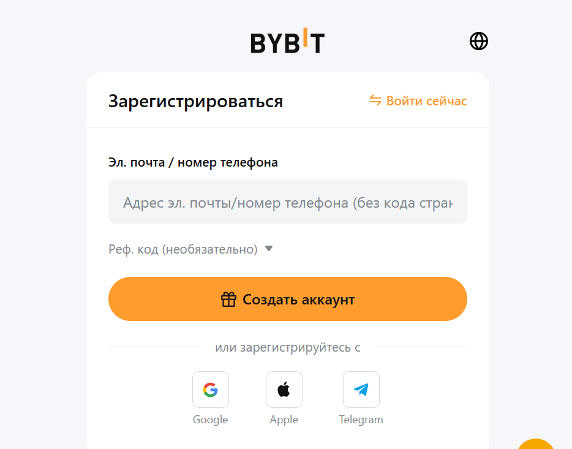
-
Войдите в личный кабинет и пройдите процесс быстрой верификации (KYC) для разблокировки всех функций.

-
В разделе "Account"(Аккаунт) выберите "Deposit"(Внести).
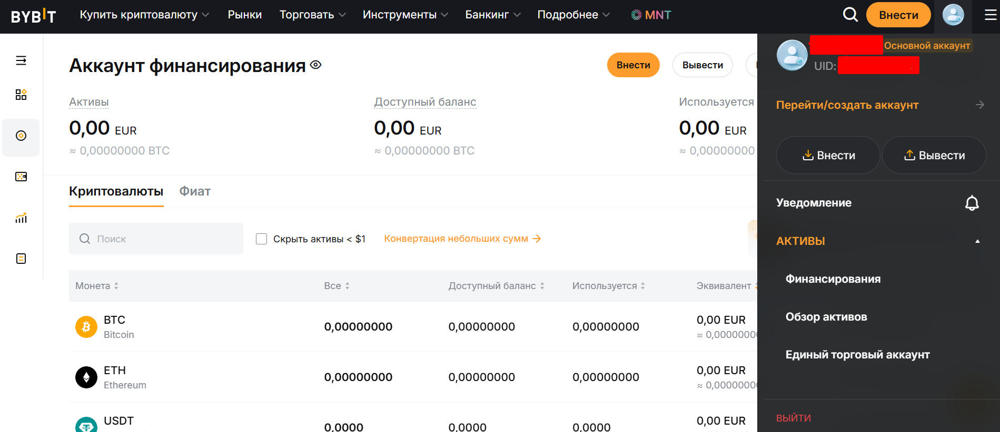
-
Заполните поля монеты и сети. Скопируйте ваш уникальный депозитный адрес для пополнения криптовалютой.
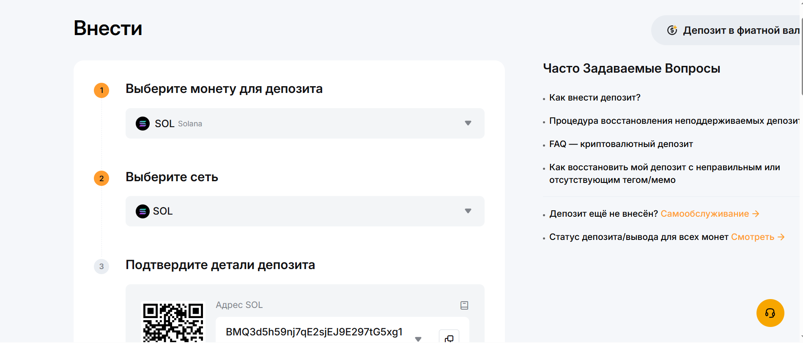
Открытие криптокошелька в Trust Wallet
- Скачайте Trust Wallet из App Store или Google Play.
- Откройте приложение и нажмите "Создать новый кошелек".
- Примите условия использования (поставьте галочку).
- Сохраните или запишите в безопасном месте секретную фразу (seed phrase). Никому не демонстрируйте эту фразу!
- Подтвердите seed-фразу — расставьте слова в правильном порядке.
- Поздравляем, ваш кошелек готов к использованию!
Переводы между пользователями
ByBit
-
Зайдите в "Assets" в личном кабинете ByBit.
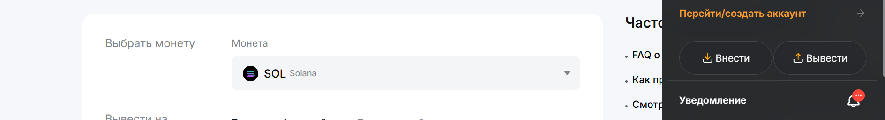
-
Выберите монету. Вставьте адрес получателя.(Для перевода монет предварительно переведите их со счета "Единый торговый" на счет "Аккаунт финансирования"
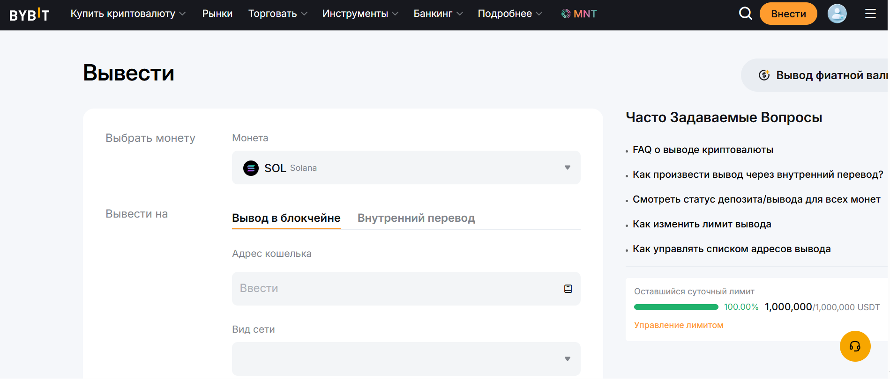
-
Выберите сеть и сумму. Убедитесь что адрес и сеть совпадают с данными получателя! Подтвердите операцию.
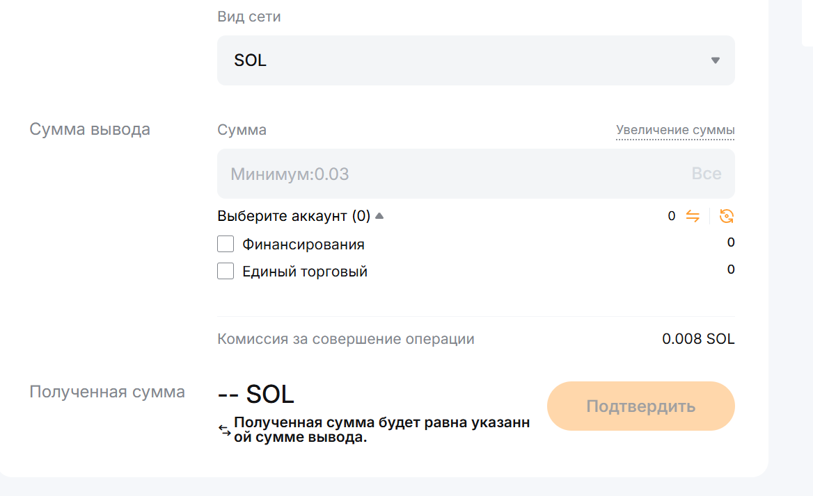
Trust Wallet
- Откройте приложение, выберите нужную валюту (например, USDT).
- Нажмите "Отправить".
- Введите адрес получателя(например, скопирован из его Trust Wallet).
- Укажите сумму, проверьте адрес, подтвердите перевод.
Вывод средств на банковскую карту
ByBit
-
Подготовка: Убедитесь, что прошли KYC-верификацию.
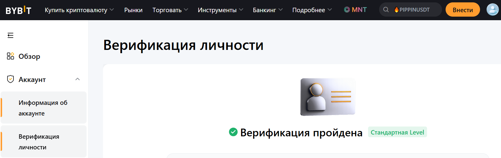
-
Перевод активов: Переведите USDT или другую валюту с «Единого торгового» аккаунта на аккаунт
«Финансирование» через меню «Активы» → «Перевести».
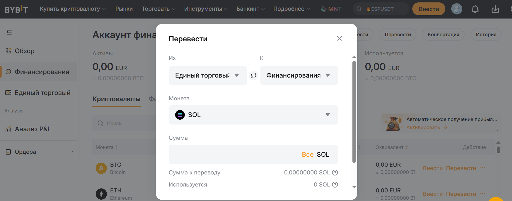
-
Переход в P2P: Перейдите в раздел «Купить криптовалюту» → «P2P-торговля».
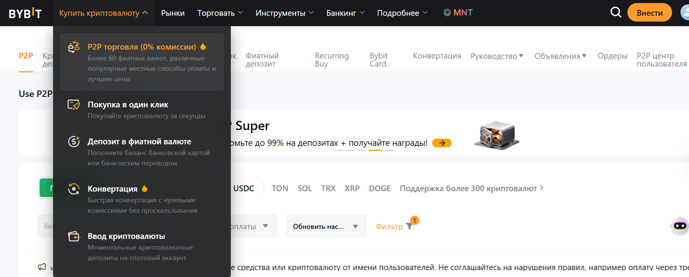
-
Создание ордера: Выберите вкладку «Продажа» и валюту (например, RUB).
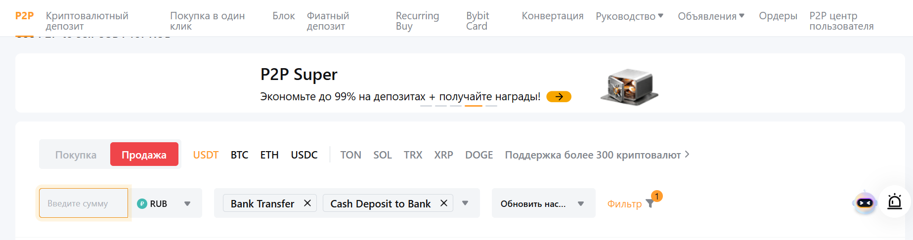
-
Выбор покупателя: Отфильтруйте по нужному банку (Сбербанк, Тинькофф/Т-Банк, СБП и др.), выберите
курс и лимиты.
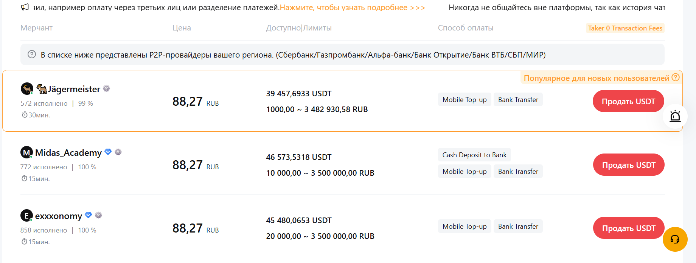
-
Продажа: Нажмите «Продать», укажите сумму и выберите способ оплаты "Bank Transfer" или "Cash Deposit to Bank".
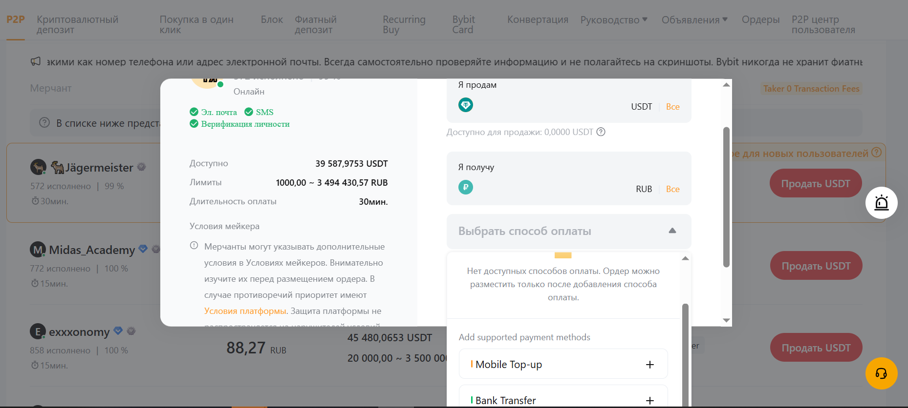
-
Заполните данные для перевода.
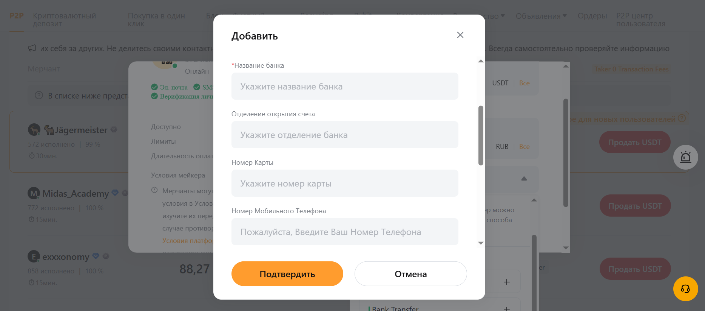
-
Получение денег: Дождитесь поступления средств на вашу карту.


-
Подтверждение: После проверки поступления денег, нажмите «Перевести» для подтверждения отправки
криптовалюты покупателю.

Trust Wallet
- В большинстве случаев требуется перевести криптовалюту на биржу (например, ByBit, Binance).
- Используйте функцию "Отправить" — введите адрес для депозита биржи.
- На бирже выберите "Продать" (Sell), выберите P2P-сервис или прямой вывод на карту.
- Следуйте инструкциям биржи: выберите банк, сумму и подтвердите операцию.